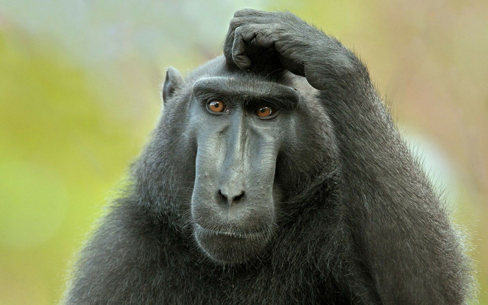

Już nie ma sensu. Nacjonalizm na agendzie
Dlaczego wiara w nacjonalistyczne, etniczne i inne formy szkodliwych mitologii nie jest tylko rekonstrukcją i historycznym atawizmem, ale przede wszystkim poważną przeszkodą na drodze do nie mniej, nie więcej ratowania Życia na planecie Ziemia.

Gadkiego czasu dnia!
I zaczniemy, może, od postawienia problemów. Mamy trzy główne, z których większość pozostałych wynika. Tutaj przyznam się, że nie kombinowałem zbytnio i zwróciłem się do znanego filozofa i historyka Yuvala Noaha Harari. W ostatnich latach jego prace zdobyły status bestsellerów, chociaż, moim skromnym zdaniem, ich główną zasługą jest prostota przedstawienia i sama banalna systematyzacja różnych gałęzi ludzkiej wiedzy o sobie i otaczającej rzeczywistości. Innymi słowy – taka niezbyt skomplikowana naukowa publicystyka o naszej przeszłości, teraźniejszości i przyszłości jako gatunku.
Do rzeczy!
Nasz z Yuvalem konsensus w tej sprawie sprowadza się do następującego:
Przed współczesnym człowiekiem stoją 3 zasadnicze pytania1, od rozwiązania których zależy nie tylko los naszego gatunku, ale także los wszystkich organizmów żyjących na planecie Ziemia. Co najmniej. Chciałbym zacząć od pytania, którym zajmuję się od dawna i na którym już nie raz zjadłem kilka kompletów zębów:
1. Kryzys ekologiczny
Tutaj, swoją drogą, Harari rozczarował mnie swoją ostatnią książką "21 lekcji na XXI wiek", ponieważ przy opisie zmian klimatycznych i ich skutków dla ekosystemów i biozjawisk używał głównie liberalnych kliszy i narracji, mówiąc o nadmiernej eksploatacji paliw kopalnych i innych. Tylko nieznacznie lub prawie wcale nie poruszył głównej przyczyny - hodowli zwierząt (i rolnictwa2 w ogóle).
Ale jak to się ma do nacjonalizmu, o którym mowa w tytule?
Wszystko jest bardzo proste - współczesny świat jest globalny. Może ci się to podobać, może nie, może ktoś jest zachwycony tym, jak szybko można podróżować lub jak daleko można rozmawiać z ludźmi.
Tylko że problemy, które idą za naszą wysoko rozwiniętą cywilizacją, dotyczą wszystkich i każdego, praktycznie niezależnie od miejsca zamieszkania.
Aby od razu rozwiać wątpliwości, podam tylko kilka przykładów:
Po pierwsze, same zmiany klimatyczne - to efekt działalności człowieka. Jeśli się z tym nie zgadzasz, gratuluję, jesteś ciemniakiem3. Wszak w środowisku naukowym panuje bezwzględny konsensus w tej sprawie.
Nasza cywilizacja zawdzięcza swoje istnienie łańcuchom logistycznym4, które umożliwiają transportowanie surowców energetycznych i towarów dosłownie na drugi koniec świata. To sprawia, że wszystkie kraje są wzajemnie od siebie zależne w każdym zakresie: gospodarczym, energetycznym i politycznym. A co najważniejsze - ekologicznym. Przecież awaria w jakiejkolwiek fabryce prowadzi do zanieczyszczenia setek i tysięcy kilometrów rzek i jezior. Plastikowa butelka, którą wyrzucisz do strumienia przy domu5, po kilku miesiącach lub roku łatwo może trafić do żołądka wieloryba w Oceanie Spokojnym. Awaria elektrowni jądrowej może uczynić cały kontynent niezdatnym do życia6. I takich przykładów można podać nieskończoność.
Wniosek jest taki - jesteśmy w głębokiej d***. Właśnie teraz rozstrzyga się los absolutnej większości organizmów żyjących na naszej planecie. Kto nas uratuje?
Stabilne, niezależne państwa narodowe, zdolne zatroszczyć się o siebie i nawiązać dobre stosunki z otaczającymi podmiotami politycznymi?
Chore, jakieś niepojęte bzdury! A jednak często je słyszymy, zwłaszcza teraz, gdy kolorowe szmatki i narodowe hasła masowo zastępują mózgi nawet tym, którzy do tej pory wykazywali jakiekolwiek oznaki aktywności intelektualnej.
Praktyczną drogą, analizując programy polityczne polityków i partii o nastawieniu nacjonalistycznym (a właściwie większości polityków), zauważymy, że starają się oni ignorować tę kwestię.
NACJONALIZM NIE MA NIC DO ZAOFEROWANIA W ZWIĄZKU Z ROZWIĄZANIEM KRYZYSU EKOLOGICZNEGO
Co oczywiste i nie budzi żadnego zdziwienia, bo prymatem liderów narodowych zawsze będą takie rzeczy jak dobrobyt ekonomiczny obywateli kraju, niezależność w podejmowaniu decyzji politycznych, wzbogacenie elit (jeśli być uczciwym) i utrzymanie granic (lub ich rozszerzenie).
W praktyce oznacza to podporządkowanie lokalnych interesów mniejszych wobec globalnych, które dla jednego małego lidera narodu czy nawet przedstawiciela wielomilionowego narodu stanowią coś nieosiągalnego i nierozwiązywalnego.
A tak to wygląda! Jak, powiedzcie mi, może Biden wpłynąć na chińskie fabryki lub zakłady produkcyjne, których szkodliwość jest odczuwalna nawet tysiące kilometrów od nich? Gdyby mógł - to by zrobił? Przecież to od korzystnych umów gospodarczych zależy dobrobyt wyborców, a więc i pozycja władzy.
Czy polityczny lider zaryzykuje stabilnością i rozwojem swojego kraju w imię populacji znikających tygrysów czy ryb? Odpowiedź jest oczywista.
Jestem pewien, że większość bystrych i rozumnych czytelników sama poda kilka przykładów, kiedy interesy Narodu stawały się ciężkim butem na gardle Natury.
2. Szybko rozwijające się technologie
Tak, to kolejny ważny punkt, w którym z Yuvalem zgadzamy się w 100 procentach.
„Ale co tutaj?” - zapytacie, - „Czy niezależne państwa sąsiadujące nie mogą rozwijać się harmonijnie na rzecz wspólnego postępu?”
Och-och-och…
Nie, nie mogą.
Bo głównym aspektem takiego rozwoju jest właśnie przeciwstawianie się i konkurencja rynków, które, jak możecie się przekonać, zniszczyły wszystko.
Przewidując wasze zdziwienie w kwestii „A co w ogóle złego w postępie technologicznym i dlaczego to ta sama globalna problematyka, co kryzys ekologiczny?” od razu opowiem ulubioną przez większość antropologów i biologów bajkę (z ważnym sensem):
Wyobraźcie sobie bawiuna, który widzi pośrodku sawanny palmę z bananami7.
Wszystko byłoby w porządku, gdyby nie to, że przy palmie krąży lew.
Teraz przed bawiunem pojawia się szereg bardzo ważnych pytań: - jak bardzo jest głodny? - ile bananów jest na palmie? - jak daleko jest do niej? - a jak daleko od palmie jest lew? - czy bawiun może poczekać, aż lew odejdzie, czy osłabnie z głodu? - czy lew wygląda na najedzonego, czy głodnego i agresywnego?
I inne. Tylko problem polega na tym, że bawiun nie ma kalkulatora ani różnych urządzeń obserwacyjnych. Albo ma?
Naukowcy zgadzają się, że ma. To zmysły bawiuna, węch, wzrok, słuch i zdolność do składania z tego ogólnej wizji świata.
Wszystko to bawiunowi dały miliony lat ewolucji jego przodków.
Faktycznie, cały bawiun to biologiczny algorytm z własnymi zasobami obliczeniowymi.

A teraz patrzymy na ręce, zaraz będzie trik:
Dziś społeczność naukowa nie ma dla was innej odpowiedzi niż to, że każdy z nas jest dokładnie takim samym algorytmem biologicznym, z bardziej skomplikowanymi operacjami obliczeniowymi.
Bawiun zamierza oszukać lwa i zjeść banana? Cóż, my wybieramy lidera politycznego lub planujemy budżet rodzinny na kilka lat, a może kupujemy samochód lub budujemy relacje z partnerem lub partnerką.
Duszy, głębokiego ja, boskiej iskry, niestety, u łysa małpa na razie nie znaleziono...
A teraz zaczyna się jeszcze bardziej fascynująca magia, zostańcie ze mną!
Otóż, załóżmy, że jesteśmy biologicznym algorytmem. Ale my sami siebie znamy słabo, często z powodu głodu, stresu, zaburzeń hormonalnych, jesteśmy skłonni podejmować decyzje, które są absolutnie szkodliwe zarówno dla nas, jak i dla innych.
Tak, badania pokazują, że sędziowie (w krajach z bardziej lub mniej niezależnym systemem sądowniczym) mają tendencję do wydawania bardziej surowych wyroków związanych z pozbawieniem wolności, jeśli … są głodni8… Jak to proste, prawda? To właśnie głód powoduje wzrost poziomu glikokortykoidów w organizmie, a w konsekwencji zwiększa stres i agresję, aktywując migdałek. Ale nie będziemy się teraz rozpraszać.
Do technologii!
Przewijasz feed na Instagramie. Twój źrenica rozszerza się na widok ciast. Odpowiedź dopaminowa (hormon zadowolenia) organizmu. Wzrok nie skupia się na cieście, a głównie bada owoce, które ozdabiają ciasto na wierzchu. Wszystko to rejestruje kamera, która znajduje się w każdym urządzeniu tuż nad ekranem. Jakie owoce najbardziej ci się podobają, jakie ciasta oglądasz dłużej, a które przewijasz, czerwony, biały czy brązowy kolor - co ci się bardziej podoba?
SZTUCZNA INTELIGENCJA zarejestruje te twoje preferencje w mig.
I oto już nie rozumiesz, jak twoje urządzenia zalały zdjęcia i filmy tych pięknych ciast, z których dziesięć już zjadłeś w ostatnich kilku dniach.
Świetnie, jeśli kapitaliści ograniczą się do manipulowania twoim uzależnieniem od słodyczy (co też jest śmiertelne - więcej ludzi umiera na cukrzycę niż na wojnach). Ktoś na pewno będzie chciał ukształtować twoje preferencje polityczne, kulturowe i wartościowe narracje.
Nie musisz być znacznie lepszy od ciebie - wystarczy znać cię trochę lepiej, niż ty sam siebie znasz.
Koniec, algorytm biologiczny "człowiek" zhakowany9!
I to tylko jeden z problemów współczesności, który już zupełnie niszczy pojęcie wolnej woli.
Wracamy do naszych owiec? Pomogą w tym państwa narodowe?
A jeśli inne kraje użyją tego przeciwko nam?! Jak straszne! Musimy natychmiast skierować wszystkie środki na rozwój nowego oprogramowania i najbardziej rozwiniętej sztucznej inteligencji10!
Bo jeśli jedno państwo zdecyduje się dać swojemu narodowi wybór, trochę zwolni rozwój technologii Big Data i Machine Learning, stawiając idealizm wolności i niezależności jednostki ponad supremacją nad sąsiadami - ryzykuje tym, że już za kilka miesięcy sąsiednie państwa, które nie wykazały takiej świadomości, złamią wszystkie systemy bankowe i wojskowe dobrych ludzi.
Czy ktoś w tej sytuacji zrobi pauzę?
3. Broń jądrowa. Nasze ulubione echo XX wieku
Jak możemy zaobserwować w ostatnich czasach, ryzyko globalnej wojny jądrowej jest bliższe niż kiedykolwiek w historii. Co więcej, sama koncepcja broni masowego rażenia, podobnie jak zaawansowane technologie połączone z SI, służy najbardziej agresywnym i przerażającym celom narodowych lub międzynarodowych organizacji państwowych.
Od momentu, gdy ludzkość osiągnęła pewien poziom rozwoju technologicznego, w którym mała grupa ludzi ma możliwość zrównania z powierzchni ziemi całe miasta i państwa11, izolacjonizm poszczególnych krajów to w zasadzie obłęd.
Kto może wiedzieć, jaką bzdurę jutro wykopie kolejny dyktator lub wódz ludów w zakamarkach historii, by usprawiedliwić konieczność doprowadzenia do zgody lub demokracji sąsiedniego kraju lub małego narodu?
Cała ta historia z bronią jądrową przypomina grę w pokera w zamkniętym pomieszczeniu, gdzie wszyscy gracze nastawili broń jeden na drugiego, a wszyscy mają wyjątkowo słabą rękę.
A my czekamy na strzał, znajdując się w tej samej sali, bez broni i rozumiejąc całkowity brak własnej podmiotowości.
Jak pomoże nam tutaj nacjonalizm i niezależność?
Jaki wniosek można wyciągnąć z całego tego pisania?
Sprawy są w katastrofalnym stanie. Gorzej niż kiedykolwiek, bo nigdy wcześniej w historii nie mieliśmy sił zdolnych do zniszczenia całej ewolucji na naszej pięknej planecie.
I nie ma powodów, by przypuszczać, że ktoś bardzo stara się to naprawić.
Wszystkie te krzyki, przesycone demokratycznym wolnym światem, rosyjską ideą lub kolektywnym dobrem cyberpunkowego nieba (i wiele innych mniejszych) - przypominają wycie umierającego zwierzęcia, które pożera samego siebie bez możliwości zatrzymania.
Każda państwowa, wielokolorowa szmatka powinna zostać opluta i odrzucona, razem ze swoją wielowiekową świętością i historią, każda idea ograniczająca globalną perspektywę - zdeptana i zrzucona w ciemność.
Prawie nie mamy już czasu…
-
Yuval Noah Harari, "21 Lessons for the 21st Century". Sindbad, Moskwa, 2022. ↩
-
John Zerzan, "Future Primitive", zbiór artykułów i esejów. ↩
-
Metaanaliza 88 125 recenzowanych prac naukowych opublikowanych w latach 2012-2020, Uniwersytet Cornell. ↩
-
Derrick Jensen, "Endgame". ↩
-
Badania naukowe opublikowane w czasopiśmie PLOS One 2 grudnia 2020 r. GPS znacznik w butelce wyrzuconej do rzeki pokazał trasę 1767 mil (2844 km). ↩
-
Georgij Lepin i Iwan Smoljar "Energetyka jądrowa - „pokojowy” zabójca". ↩
-
Robert Sapolsky, "Biologia dobra i zła", Alpina Non-fiction, Moskwa, 2021. ↩
-
Robert Sapolsky, "Biologia dobra i zła", Alpina Non-fiction, Moskwa, 2021. ↩
-
Yuval Noah Harari, "21 Lessons for the 21st Century". Sindbad, Moskwa, 2022. ↩
-
"The Social Dilemma", dokument Netflix, 2020 r. ↩
-
Theodore John Kaczynski, "Industrial Society and Its Future". ↩